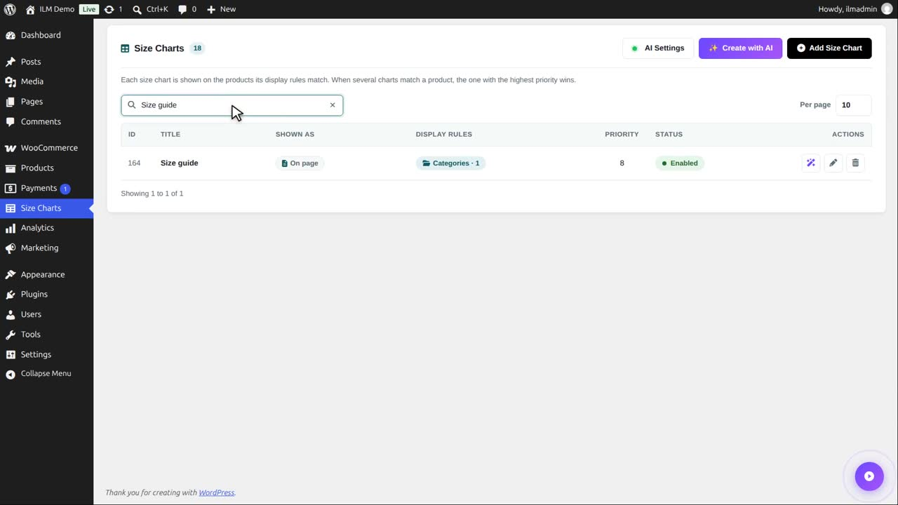
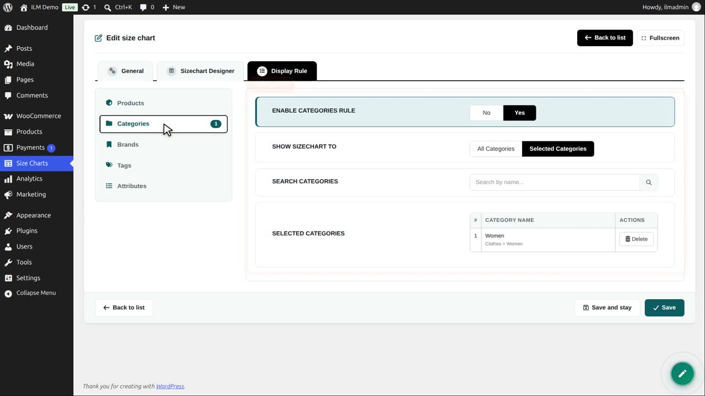
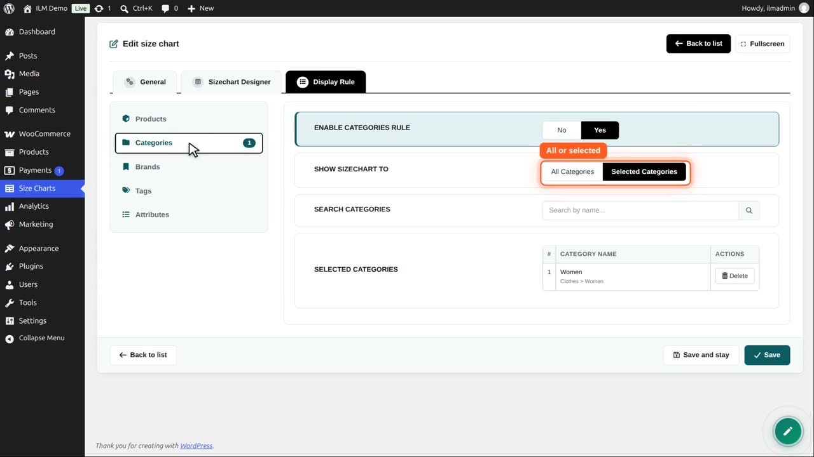
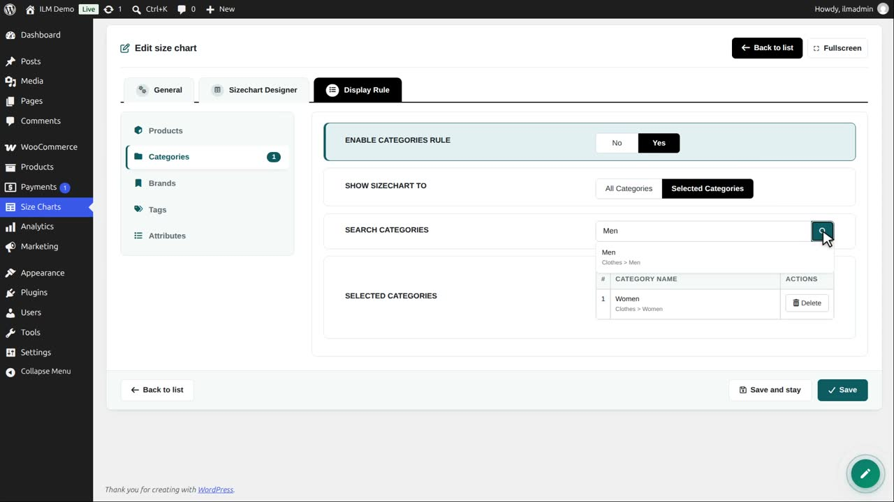
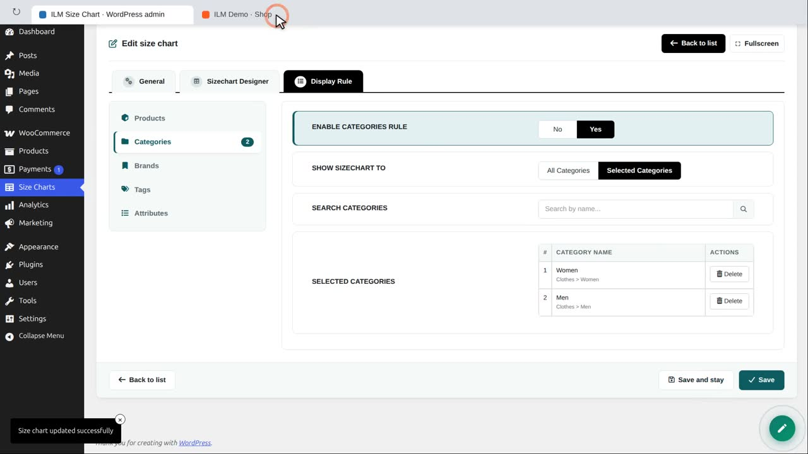
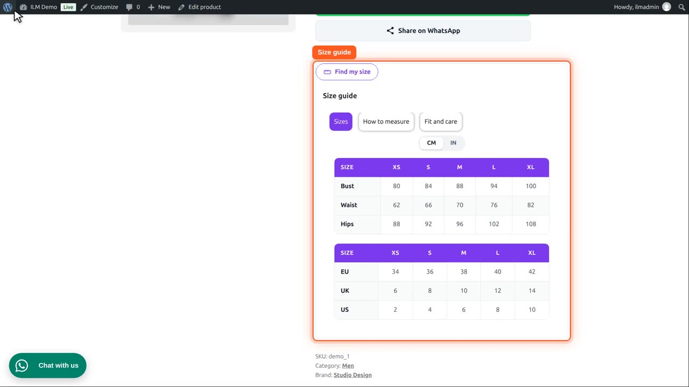

This T-shirt is in the category Men, and no size chart is shown for it yet.

Edit the Size guide chart, open Display Rule, then Categories. The rule is on, for the selected category Women.

All Categories would show it on every product of the shop. Selected Categories limits it to the list below.

Search for Men, and click the search button.

Click Men in the results. Now the chart is for both categories. A product counts when one of its categories is in the list. Child categories are included.

Save, and reload the T-shirt. It now shows the Size guide chart, on the page, because that chart is set to Page.

The Delete button takes a category off the list again. Every product added to these categories later shows the chart too.